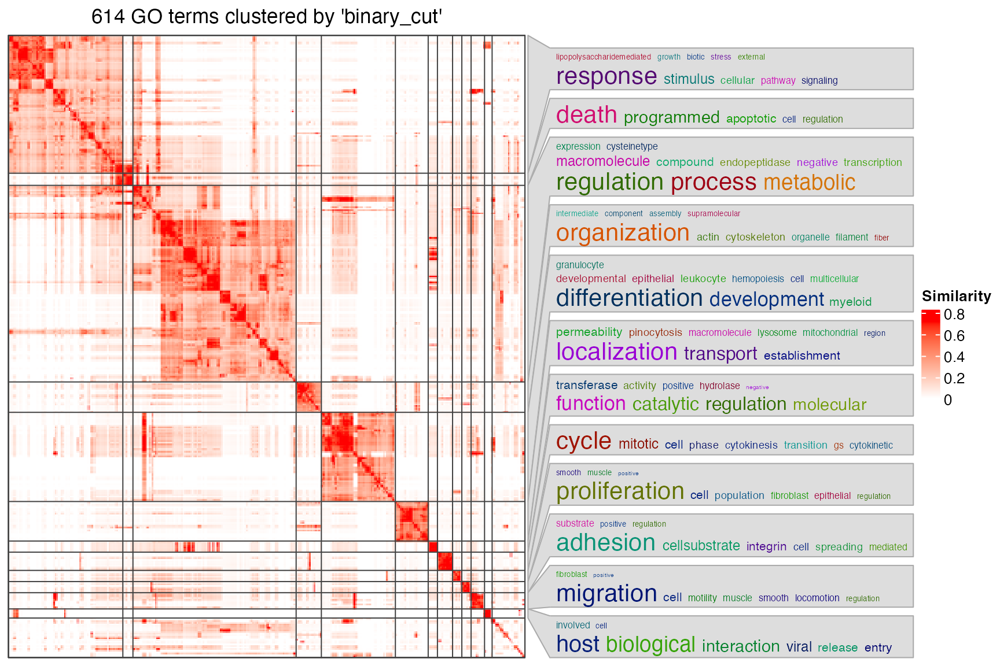

vignettes/group_associations.Rmd
group_associations.RmdLet’s first do a combination analysis with rGREAT and simplifyEnrichment. Let’s say, you have a list of genomic regions of interest (in the following example, we use a list of transcription factor binding sites). You do a GO enrichment analysis with rGREAT and visualize the enrichment results with simplifyEnrichment.
library(rGREAT)
df = read.table(url("https://raw.githubusercontent.com/jokergoo/rGREAT_suppl/master/data/tb_encTfChipPkENCFF708LCH_A549_JUN_hg19.bed"))
# convert to a GRanges object
gr = GRanges(seqnames = df[, 1], ranges = IRanges(df[, 2], df[, 3]))
res = great(gr, "BP", "hg19")
tb = getEnrichmentTable(res)
head(tb)## id description genome_fraction observed_region_hits
## 1 GO:0097190 apoptotic signaling pathway 0.05142843 175
## 2 GO:0042981 regulation of apoptotic process 0.13625922 382
## 3 GO:0043067 regulation of programmed cell death 0.13923473 385
## 4 GO:0010941 regulation of cell death 0.15491807 413
## 5 GO:0006915 apoptotic process 0.17416621 458
## 6 GO:0033554 cellular response to stress 0.16660653 438
## fold_enrichment p_value p_adjust mean_tss_dist observed_gene_hits gene_set_size
## 1 1.971487 0 0 109284 109 585
## 2 1.624264 0 0 124438 270 1394
## 3 1.602036 0 0 125615 273 1426
## 4 1.544569 0 0 122812 295 1577
## 5 1.523564 0 0 122719 331 1833
## 6 1.523145 0 0 132952 307 1883
## fold_enrichment_hyper p_value_hyper p_adjust_hyper
## 1 1.525021 3.675911e-06 7.282157e-05
## 2 1.585280 1.110223e-15 3.409079e-13
## 3 1.566925 3.552714e-15 8.311658e-13
## 4 1.531071 5.218048e-15 9.860104e-13
## 5 1.477987 1.387779e-14 2.351089e-12
## 6 1.334422 2.225650e-08 8.347036e-07
library(simplifyEnrichment)
sig_go_ids = tb$id[tb$p_adjust < 0.001]
cl = simplifyGO(sig_go_ids)
head(cl)## id cluster
## 1 GO:0097190 1
## 2 GO:0042981 2
## 3 GO:0043067 2
## 4 GO:0010941 2
## 5 GO:0006915 2
## 6 GO:0033554 1
table(cl$cluster)##
## 1 2 3 4 5 6 7 8 9 10 11 12 13 14 15 16 17 18 19 20 21 22 23 24 25
## 136 12 194 1 1 30 88 39 11 18 5 11 5 11 1 1 1 16 9 1 4 3 5 2 1
## 26 27 28 29 30
## 1 3 1 2 1The plot looks not bad. Next you may want to get the gene-region associations for significant GO terms. For example, the association for the first GO term:
getRegionGeneAssociations(res, cl$id[1])## GRanges object with 175 ranges and 2 metadata columns:
## seqnames ranges strand | annotated_genes dist_to_TSS
## <Rle> <IRanges> <Rle> | <CharacterList> <IntegerList>
## [1] chr1 16472855-16473095 * | EPHA2 9487
## [2] chr1 16490874-16491114 * | EPHA2 -8292
## [3] chr1 23073949-23074189 * | KDM1A -271752
## [4] chr1 23912118-23912358 * | RPL11 -105911
## [5] chr1 28479716-28479956 * | EYA3 -64568
## ... ... ... ... . ... ...
## [171] chr20 48292419-48292659 * | PTGIS -107712
## [172] chr20 48782588-48782828 * | CEBPB -24292
## [173] chr20 48802827-48803067 * | CEBPB -4053
## [174] chr20 48989426-48989666 * | CEBPB,PTPN1 182306,-137225
## [175] chr20 49039803-49040043 * | CEBPB,PTPN1 232683,-86848
## -------
## seqinfo: 23 sequences from an unspecified genome; no seqlengthsThere are more than 600 significant GO terms, and perhaps you don’t want to obtain such gene-region associations for every one of them.
As simplifyEnrichment already clusters significant GO terms into a smaller number of groups, you may switch your need of obtaining the associations from single GO terms to a group of GO terms where they show similar biological concept. In the new version of rGREAT (only available on GitHub currently), the second argument can be set as a vector of GO IDs. So, for example, to get the gene-region association for GO terms in the first cluster:
getRegionGeneAssociations(res, cl$id[cl$cluster == 1])## GRanges object with 1245 ranges and 2 metadata columns:
## seqnames ranges strand | annotated_genes dist_to_TSS
## <Rle> <IRanges> <Rle> | <CharacterList> <IntegerList>
## [1] chr1 1280252-1280492 * | TAS1R3,DVL1 13526,4000
## [2] chr1 2143913-2144153 * | FAAP20 -4741
## [3] chr1 4052186-4052426 * | AJAP1 -662679
## [4] chr1 4440698-4440938 * | AJAP1 -274167
## [5] chr1 7359438-7359678 * | CAMTA1,VAMP3 514054,-471651
## ... ... ... ... . ... ...
## [1241] chr22 37921455-37921695 * | CARD10 -6077
## [1242] chr22 39096963-39097203 * | GTPBP1 -4604
## [1243] chr22 39704855-39705095 * | PDGFB,RPL3 -63898,11296
## [1244] chr22 40894508-40894748 * | SGSM3,MRTFA 127913,137942
## [1245] chr22 50364455-50364695 * | PIM3,IL17REL 10312,86360
## -------
## seqinfo: 23 sequences from an unspecified genome; no seqlengths## R version 4.3.1 (2023-06-16)
## Platform: x86_64-apple-darwin20 (64-bit)
## Running under: macOS Ventura 13.2.1
##
## Matrix products: default
## BLAS: /Library/Frameworks/R.framework/Versions/4.3-x86_64/Resources/lib/libRblas.0.dylib
## LAPACK: /Library/Frameworks/R.framework/Versions/4.3-x86_64/Resources/lib/libRlapack.dylib; LAPACK version 3.11.0
##
## locale:
## [1] C/UTF-8/C/C/C/C
##
## time zone: Europe/Berlin
## tzcode source: internal
##
## attached base packages:
## [1] grid stats4 stats graphics grDevices utils datasets methods base
##
## other attached packages:
## [1] simplifyEnrichment_1.11.1 rGREAT_2.5.4 GenomicRanges_1.52.1
## [4] GenomeInfoDb_1.36.4 IRanges_2.36.0 S4Vectors_0.40.2
## [7] BiocGenerics_0.48.1 knitr_1.44
##
## loaded via a namespace (and not attached):
## [1] RColorBrewer_1.1-3 jsonlite_1.8.8
## [3] shape_1.4.6 magrittr_2.0.3
## [5] magick_2.8.0 GenomicFeatures_1.52.2
## [7] rmarkdown_2.25 GlobalOptions_0.1.2
## [9] fs_1.6.3 BiocIO_1.10.0
## [11] zlibbioc_1.46.0 ragg_1.2.6
## [13] vctrs_0.6.4 memoise_2.0.1
## [15] Cairo_1.6-2 Rsamtools_2.16.0
## [17] RCurl_1.98-1.12 htmltools_0.5.7
## [19] S4Arrays_1.0.6 TxDb.Hsapiens.UCSC.hg19.knownGene_3.2.2
## [21] progress_1.2.2 curl_5.1.0
## [23] sass_0.4.8 bslib_0.6.1
## [25] htmlwidgets_1.6.2 desc_1.4.2
## [27] cachem_1.0.8 GenomicAlignments_1.36.0
## [29] mime_0.12 lifecycle_1.0.4
## [31] iterators_1.0.14 pkgconfig_2.0.3
## [33] Matrix_1.6-1.1 R6_2.5.1
## [35] fastmap_1.1.1 GenomeInfoDbData_1.2.10
## [37] MatrixGenerics_1.12.3 shiny_1.8.0
## [39] clue_0.3-65 digest_0.6.33
## [41] colorspace_2.1-0 AnnotationDbi_1.62.2
## [43] rprojroot_2.0.3 textshaping_0.3.7
## [45] RSQLite_2.3.1 org.Hs.eg.db_3.17.0
## [47] filelock_1.0.2 fansi_1.0.5
## [49] httr_1.4.7 abind_1.4-5
## [51] compiler_4.3.1 bit64_4.0.5
## [53] doParallel_1.0.17 BiocParallel_1.34.2
## [55] DBI_1.1.3 biomaRt_2.56.1
## [57] rappdirs_0.3.3 proxyC_0.3.3
## [59] DelayedArray_0.26.7 rjson_0.2.21
## [61] tools_4.3.1 httpuv_1.6.13
## [63] glue_1.6.2 restfulr_0.0.15
## [65] GOSemSim_2.26.1 promises_1.2.1
## [67] cluster_2.1.4 generics_0.1.3
## [69] hms_1.1.3 xml2_1.3.6
## [71] utf8_1.2.3 XVector_0.40.0
## [73] foreach_1.5.2 pillar_1.9.0
## [75] stringr_1.5.0 later_1.3.2
## [77] circlize_0.4.15 dplyr_1.1.3
## [79] BiocFileCache_2.8.0 lattice_0.21-9
## [81] rtracklayer_1.60.1 bit_4.0.5
## [83] tidyselect_1.2.0 GO.db_3.17.0
## [85] ComplexHeatmap_2.18.0 tm_0.7-11
## [87] Biostrings_2.68.1 NLP_0.2-1
## [89] SummarizedExperiment_1.30.2 xfun_0.40
## [91] Biobase_2.60.0 matrixStats_1.2.0
## [93] DT_0.30 stringi_1.7.12
## [95] yaml_2.3.7 TxDb.Hsapiens.UCSC.hg38.knownGene_3.17.0
## [97] evaluate_0.22 codetools_0.2-19
## [99] tibble_3.2.1 cli_3.6.2
## [101] RcppParallel_5.1.7 xtable_1.8-4
## [103] systemfonts_1.0.5 jquerylib_0.1.4
## [105] Rcpp_1.0.11 dbplyr_2.3.4
## [107] png_0.1-8 XML_3.99-0.14
## [109] parallel_4.3.1 ellipsis_0.3.2
## [111] pkgdown_2.0.7 blob_1.2.4
## [113] prettyunits_1.2.0 bitops_1.0-7
## [115] slam_0.1-50 purrr_1.0.2
## [117] crayon_1.5.2 GetoptLong_1.0.5
## [119] rlang_1.1.2 KEGGREST_1.40.1